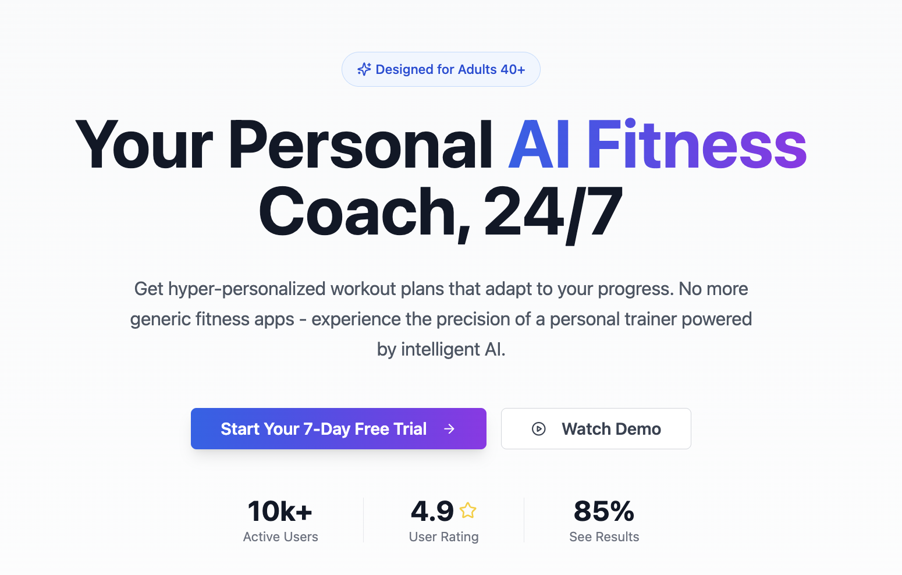

Fitness AI Coach
Built a SaaS platform for personalized fitness coaching (adults 40+). FastAPI backend with multi-provider
LLM setup (Groq, OpenAI, Gemini) for workout generation, Next.js frontend, Stripe subscriptions,
and proper observability with Langfuse and Sentry. Docker-deployed with PostgreSQL and Redis.
Stack: Python, TypeScript, FastAPI, Next.js, PostgreSQL, Docker, LangChain, Stripe
Stack: Python, TypeScript, FastAPI, Next.js, PostgreSQL, Docker, LangChain, Stripe